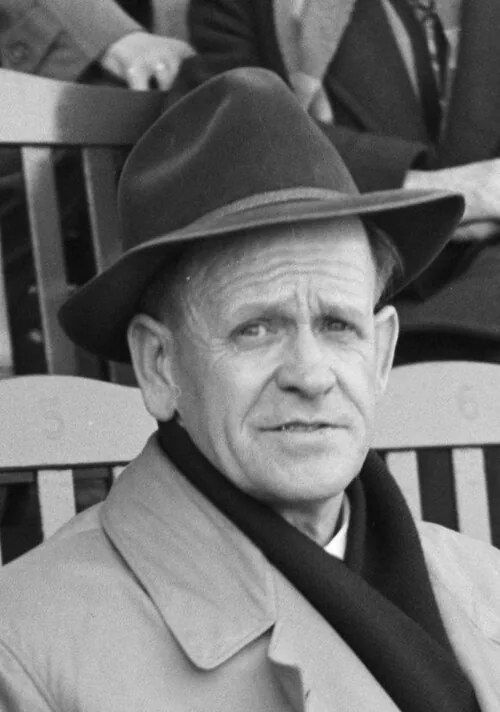

Photo source ↗Wim van Rossem for Anefo · CC0
The profile
Sepp Herberger
Sepp Herberger was a long-serving German national-team coach. He shaped the West Germany side that returned to World Cup competition after the Second World War.
Herberger held a long tenure as German national-team coach. He rebuilt the side after the war and placed trust in a group led on the field by Fritz Walter.
Herberger led West Germany to the 1954 title. His side came from two goals down to beat Hungary 3–2 in the final in Bern.
1954Switzerland
Champion
Group B West Germany4 : 1Turkey
- Hans SCHAEFER14′
- Berni KLODT52′
- Ottmar WALTER60′
- Max MORLOCK84′
- Suat MAMAT2′
West Germanyhome
Starting lineup
- Toni TUREK
- Fritz LABAND
- Werner KOHLMEYER
- Jupp POSIPAL
- Karl MAI
- Fritz WALTER
- Horst ECKEL
- Max MORLOCK
- Berni KLODT
- Ottmar WALTER
- Hans SCHAEFER
Substitutions
- No substitutions
Turkeyaway
Starting lineup
- Turgay SEREN
- Ridvan BOLATLI
- Basri DIRIMLILI
- Mustafa ERTAN
- Cetin ZEYBEK
- Rober ERYOL
- Erol KESKIN
- Suat MAMAT
- Ismail FERIDUN
- Buhran SARGUN
- Lefter KUCUKANDONYADIS
Substitutions
- No substitutions
Group B Hungary8 : 3West Germany
- Sandor KOCSIS3′
- Ferenc PUSKAS17′
- Sandor KOCSIS21′
- Nandor HIDEGKUTI52′
- Nandor HIDEGKUTI54′
- Sandor KOCSIS69′
- Jozsef TOTH75′
- Sandor KOCSIS78′
- Alfred PFAFF25′
- Helmut RAHN77′
- Richard HERRMANN84′
Hungaryhome
Starting lineup
- Gyula GROSICS
- Jeno BUZANSZKY
- Mihaly LANTOS
- Gyula LORANT
- Jozsef BOZSIK
- Jozsef ZAKARIAS
- Jozsef TOTH
- Sandor KOCSIS
- Nandor HIDEGKUTI
- Ferenc PUSKAS
- Zoltan CZIBOR
Substitutions
- No substitutions
West Germanyaway
Starting lineup
- Heinz KWIATKOWSKI
- Werner KOHLMEYER
- Hans BAUER
- Jupp POSIPAL
- Werner LIEBRICH
- Paul MEBUS
- Fritz WALTER
- Horst ECKEL
- Helmut RAHN
- Richard HERRMANN
- Alfred PFAFF
Substitutions
- No substitutions
Group B playoff West Germany7 : 2Turkey
- Ottmar WALTER7′
- Hans SCHAEFER12′
- Max MORLOCK30′
- Max MORLOCK60′
- Fritz WALTER62′
- Max MORLOCK77′
- Hans SCHAEFER79′
- Mustafa ERTAN21′
- Lefter KUCUKANDONYADIS82′
West Germanyhome
Starting lineup
- Toni TUREK
- Fritz LABAND
- Hans BAUER
- Jupp POSIPAL
- Karl MAI
- Fritz WALTER
- Horst ECKEL
- Max MORLOCK
- Berni KLODT
- Ottmar WALTER
- Hans SCHAEFER
Substitutions
- No substitutions
Turkeyaway
Starting lineup
- Sukru ERSOY
- Ridvan BOLATLI
- Basri DIRIMLILI
- Mustafa ERTAN
- Naci ERDEM
- Cetin ZEYBEK
- Rober ERYOL
- Erol KESKIN
- Lefter KUCUKANDONYADIS
- Onarici NECMI
- Coskun TAS
Substitutions
- No substitutions
Quarter-final West Germany2 : 0Yugoslavia
- Ivan HORVAT9′ · own goal
- Helmut RAHN85′
West Germanyhome
Starting lineup
- Toni TUREK
- Fritz LABAND
- Werner KOHLMEYER
- Werner LIEBRICH
- Karl MAI
- Fritz WALTER
- Horst ECKEL
- Helmut RAHN
- Max MORLOCK
- Ottmar WALTER
- Hans SCHAEFER
Substitutions
- No substitutions
Yugoslaviaaway
Starting lineup
- Vladimir BEARA
- Branko STANKOVIC
- Tomislav CRNKOVIC
- Ivan HORVAT
- Zlatko CAJKOVSKI
- Vujadin BOSKOV
- Branko ZEBEC
- Rajko MITIC
- Bernard VUKAS
- Stjepan BOBEK
- Milos MILUTINOVIC
Substitutions
- No substitutions
Semi-final West Germany6 : 1Austria
- Hans SCHAEFER31′
- Max MORLOCK47′
- Fritz WALTER54′ · pen.
- Ottmar WALTER61′
- Fritz WALTER64′ · pen.
- Ottmar WALTER89′
- Erich PROBST51′
West Germanyhome
Starting lineup
- Toni TUREK
- Werner KOHLMEYER
- Jupp POSIPAL
- Werner LIEBRICH
- Karl MAI
- Fritz WALTER
- Horst ECKEL
- Helmut RAHN
- Max MORLOCK
- Ottmar WALTER
- Hans SCHAEFER
Substitutions
- No substitutions
Austriaaway
Starting lineup
- Walter ZEMAN
- Gerhard HANAPPI
- Ernst HAPPEL
- Ernst OCWIRK
- Karl KOLLER
- Robert KOERNER
- Walter SCHLEGER
- Theodor WAGNER
- Erich PROBST
- Alfred KOERNER
- Ernst STOJASPAL
Substitutions
- No substitutions
Final West Germany3 : 2Hungary
- Max MORLOCK10′
- Helmut RAHN18′
- Helmut RAHN84′
- Ferenc PUSKAS6′
- Zoltan CZIBOR8′
West Germanyhome
Starting lineup
- Toni TUREK
- Werner KOHLMEYER
- Jupp POSIPAL
- Werner LIEBRICH
- Karl MAI
- Fritz WALTER
- Horst ECKEL
- Helmut RAHN
- Max MORLOCK
- Ottmar WALTER
- Hans SCHAEFER
Substitutions
- No substitutions
Hungaryaway
Starting lineup
- Gyula GROSICS
- Jeno BUZANSZKY
- Mihaly LANTOS
- Gyula LORANT
- Jozsef BOZSIK
- Jozsef ZAKARIAS
- Sandor KOCSIS
- Nandor HIDEGKUTI
- Ferenc PUSKAS
- Zoltan CZIBOR
- Mihaly TOTH
Substitutions
- No substitutions